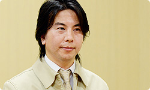
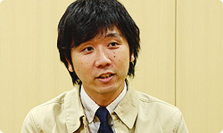
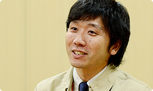

<div class="l-category-local-header">
<div class="category-local-header">
<div class="category-local-heading"><span>社長が訊く</span>
<div class="category-local-sub">IWATA ASKS


<div class="l-soft-topic-path is-block">
<div class="l-soft-topic-path-inner">
<div class="soft-topic-path">
<ul class="topic-path"><li class="topic-path-item"><span>『Wii U』 Nintendo TVii篇</span></li></ul>


<div id="page-container">
<header class="interviewheader">
<h2 class="interviewheader__ttl"><span class="subtext">社長が訊く</span>『Wii U』</h2>

</header>
<div class="tabmenu-container">
<p class="tabmenu__ttl">シリーズ一覧
<ul class="tabmenu__body tabnum12">
<li class="tabmenu__item tab1">本体 篇</li>
<li class="tabmenu__item tab2">Wii U GamePad 篇</li>
<li class="tabmenu__item tab3">Miiverse プロデュース 篇</li>
<li class="tabmenu__item tab4">Miiverse 開発スタッフ 篇</li>
<li class="tabmenu__item tab5">インターネットブラウザー 篇</li>
<li class="tabmenu__item tab6">Wii U Chat 篇</li>
<li class="tabmenu__item tab7">New スーパーマリオブラザーズ U 篇</li>
<li class="tabmenu__item tab8">ZombiU（ゾンビU） 篇</li>
<li class="tabmenu__item tab9">Nintendo×JOYSOUND Wii カラオケ U 篇</li>
<li class="tabmenu__item tab10">Nintendo Land 篇</li>
<li class="tabmenu__item tab11">Nintendo TVii 篇</li>
<li class="tabmenu__item tab12">Wii Street U powered by Google 篇</li>
</ul>

<div class="hero-container">
<div class="hero__img">
<p class="hero__note">本文の一部を引用される場合は、必ず、本ページのURLを明記、<br>または本ページへのリンクをしていただくようお願いいたします。
<div class="interviewsubheader">
<div class="interviewsubheader__ttl"><h2>Nintendo TVii篇</h2>

<div class="pageindex-container">
<p class="pageindex__ttl">目次
<ul class="pageindex__body">
<li class="pageindex__item active">1. 「どこからがウェブ？」</li>
<li class="pageindex__item">2. 手元で見るリッチな番組表</li>
<li class="pageindex__item">3. レコメンドエンジン</li>
<li class="pageindex__item">4. 人生が豊かになるきっかけに</li>
</ul>

<div class="interview-container">
<h3 class="interview__ttl">1. 「どこからがウェブ？」</h3>

岩田
: 「いつもテレビの隣にあって、<br>　インターネットにもつながるWii Uを、<br>　テレビをより楽しく見るために使えないか？」<br>という想いから生まれたのが、<br>今回お話を訊くWii Uの標準機能として搭載されている<br>テレビ番組ガイド、『Nintendo TVii』です。<br>では自己紹介からお願いします。


織田
: 環境制作部の織田です。<br>今回、『Nintendo TVii』のディレクションを担当しました。<br>ちょうど２年前（２０１０年）の今頃から<br>プロジェクトがスタートしていました。




神川
: 同じく環境制作部の神川です。<br>わたしは去年（２０１１年）の１月頃から<br>プログラマーとしてチームに加わって、<br>おもに技術面のディレクションを担当しました。<br>今回、わたしたち以外にも、ネットワーク事業部の<br>東京ネットワークシステム開発グループのメンバーも<br>一緒に開発を行いました。




岩田
: はい、よろしくお願いします。<br>じつはこの『Nintendo TVii』の構想は、<br>Wii Uのわりと早い開発段階からあったものの、<br>具体化までかなり時間を費やしているんです。<br>というのも、放送されているテレビ番組の内容も<br>テレビの見られかたの文化も、国ごとにまったく違っていて、<br>世界共通で同じサービスを提供することができないからです。<br>&nbsp;<br>そんな状況で、織田さんがこの企画に携わることになって<br>最初にはじめたことは何でしたか？


織田
: 自分の中でのはじまりとしては、<br>「テレビという完成されたモノに寄り添う、<br>　理想のコンテンツとは何か？」<br>ということを考えることからでした。<br>「人がどうテレビに接して、何が楽しくて、<br>　どのように媒体を受け入れてきたか」<br>という分析をゼロから行っていき、<br>企画段階ではいろんなことを考えたんですが、<br>最初は形にできず、四苦八苦していました。


岩田
: 最初から答えが決まって、<br>２年間走ってきたわけではなくて、<br>いきなり迷いの森に<br>入り込んでしまった感じでしたよね。


織田
: まさにそうでした。


岩田
: 比較文化論みたいな話になりますが、<br>日本と海外のテレビの見られかたの違いを、<br>簡単に説明してもらえますか？


織田
: はい。まず日本はみなさんご存じのとおり<br>地方ごとに差はありますが、<br>地上波の放送が、最大７、８局程度あって、<br>それがテレビ視聴の多くを占めているのですが、<br>海外のテレビは、数十～数百チャンネルもの<br>膨大な局数からなっていることが多いんです。


岩田
: アメリカでは、ケーブルテレビがとても広く普及しているので、<br>多くの家で、日本でいうところのＣＳ放送（※1）を<br>多チャンネル契約している状態みたいになっている<br>というようなことですかね。<br>ちょっと強引なたとえですが（笑）。

※1ＣＳ放送＝ＣＳ（通信衛星）を使った衛星放送の総称。


織田
: そうですね。たとえばアメリカでしたら、<br>スポーツひとつとっても、<br>チームごとに全戦を放送するチャンネルがある、<br>みたいな感じです。


岩田
: 専門化、細分化が、日本の比ではないんですよね。<br>あと、ＶＯＤ（※2）サービスの普及も、<br>日本とはずいぶん違いますよね。

※2ＶＯＤ＝ビデオ・オン・デマンドの略称。インターネットを介して映像コンテンツのストリーミング配信を行い、ユーザーが見たい時にそのコンテンツを視聴するシステム。


織田
: はい。個人の方のテレビへの向き合いかたも<br>まったく異なっていて、<br>日本ではどちらかというと受け身で、<br>リビングやお茶の間で、みんなで楽しむ文化ですが、<br>アメリカでは個人の嗜好別に番組が細分化され、<br>ニーズがしぼられた文化になっているんです。


岩田
: だから日本のテレビで、<br>「何か面白いものはあるかな？」と<br>ザッピング（※3）して選ぶ感覚は<br>アメリカではあり得ないんですよね。<br>チャンネルが多いのでキリがなくなってしまうわけで（笑）。


※3ザッピング＝テレビを見る際、リモコンでチャンネルを頻繁に切り替えながら視聴すること。


織田
: そうですね。<br>それもあって、テレビ案内に対する<br>アメリカからのリクエストとしては、<br>「ユニバーサルサーチがしたい」<br>という要望がいちばん強かったんです。


岩田
: 「ユニバーサルサーチ」というのは、<br>キーワードを入れたら、<br>それに関する番組が、どこのチャンネル、<br>どこのＶＯＤでやっているのかを、<br>まとめてサーチして<br>一覧表示してくれるサービスのことですね。<br>ＶＯＤごとに個別にサーチすることは、<br>以前からできたんですけど、<br>「まとめてサーチして<br>　すぐにそれが見られる」ことのメリットは、<br>チャンネルが多くて<br>ＶＯＤサービスの普及が進んでいるアメリカでは、<br>すごく大きいみたいなんですね。なので、<br>「いっぺんに取得できるサービスにしてほしい」<br>ってすごく要望されたんですよね。


織田
: はい。さらにヨーロッパでは、<br>まず国が複数あって、それぞれ言葉も違いますから、<br>そこにひとつのフォーマットで対応するのは<br>非常に難しいんです。


岩田
: 織田さんが最初、迷いの森に入ったのは<br>そんな状況もあってのことなんですが、<br>ある時期にわたしから、<br>「日本とアメリカとヨーロッパの<br>　リクエストはぜったいそろわないんだから、<br>　仕組みの土台だけ共有することにして、<br>　それぞれの地域ごとに別々のサービスが実現できるように<br>　ウェブ系の技術を活用して<br>　サーバー側でほとんどの処理をやってしまってはどうか」<br>と言い出したんですよね。


織田
: はい。そこで、今回の『Nintendo TVii』は、<br>ベースは同じくしつつも、各地域の事情に合わせて<br>別々につくり変えることができるように、<br>エンジンや実装方法は、<br>任天堂のゲーム機ではあまり前例のない、<br>サーバー側にサービスを実装する<br>やりかたでつくることにしたんです。


岩田
: 任天堂は、これまで、ゲーム機の側で動いている<br>クライアント（※4）のソフトウェアをつくり込むことを<br>得意としてきた会社でしたし、<br>WiiやニンテンドーDSiショップなど<br>ウェブ系技術で実装したサービスでは、<br>使い勝手や操作性が犠牲になっていた経験もしていたので、<br>このアプローチは、同時に、<br>「サーバーにおもなサービスを実行させ、<br>　クライアント側に必要最低限の環境を残して、<br>　いかに快適に動作させるか」<br>ということへのチャレンジでもあったわけですよね。<br>そのあたりは神川さんから<br>説明してもらえますか？

※4クライアント＝コンピューターネットワークにおいて、サーバーコンピューターの提供する機能やデータを利用するコンピューターのこと。この場合、インターネットにつながった、WiiやWii U、ニンテンドー3DSなどを指す。


神川
: はい。今回の『Nintendo TVii』のクライアントは<br>WebKit（ウェブキット）（※5）を利用してつくっていて、<br>ブラウザー的なアプリケーションになっています。<br>実際に表示される画はほとんどが<br>HTML（※6）ベースでつくられていますので、<br>ウェブ技術そのものを使って<br>ページをつくっている形になります。

※5Webkit（ウェブキット）＝appleが中心となって開発されているオープンソースのHTMLレンダリングエンジン群の総称。
※6HTML＝ウェブページを作成するために開発された言語。


岩田
: それは普通のブラウザーとは違う、<br>何か特殊なことをしているんですか？


神川
: いろいろと独自に<br>拡張しているものが多々あります。<br>たとえば音を鳴らしたりとか、<br>Wii U独自の機能を使う拡張を施しています。


岩田
: Wii Uの操作系を取り込んだ<br>仕組みもあるんですね。


神川
: そのあたりも対応していて、<br>タッチスクリーンはもちろんですけど、<br>各種ボタンで快適な操作ができるよう工夫しています。


岩田
: わたしはアメリカ版を発表前に<br>一度さわらせてもらったんですけど、<br><span>ウェブ技術を使って動いているとは<br>ちょっと思えないくらい、<br>「スムーズで軽快な手ざわりだ」と感じましたよ。</span>


神川
: そうですね。マリオクラブ（※7）で<br>デバッグを行っていたのですが、<br>開始して１週間くらい経ってから<br>「これ、ネイティブ（※8）ではなくて、<br>　ウェブ技術でできているんですか？」って<br>質問されたんです。





※7マリオクラブ＝マリオクラブ株式会社。任天堂の開発中ソフトのデバッグやテストプレイを行う。
※8ネイティブ＝この場合、HTMLエンジンを介さず、直接ハードウェアに命令を送ってプログラム処理・描画しているアプリケーションを意味する。


岩田
: ああ、それはつくった側としては<br>「ニヤリ」とする瞬間ですよね。


神川
: はい、ちょっとうれしかったです（笑）。<br>よく「どこからがウェブ技術なんですか？」って<br>聞かれるんですけど、<br>ほぼ全部ということを説明すると、<br>みなさんおどろかれます。


岩田
: 「異なる文化すべてに対応するには<br>　ウェブ技術を活かしたつくりかたしかない」<br>と言い出した自分自身が、正直、<br>「ネイティブでアプリを書く場合に比べて、<br>　柔軟性は得られても<br>　操作感は多少犠牲になるかもしれない」と<br>思っていたんです。<br>でも、ぜんぜんそんなことはなかったわけで、<br>「それだけ今回Wii Uはパワフルで、<br>　ウェブエンジンがしっかりチューニングできたんだなぁ」<br>と感じました。


<li class="pagination-next"><span>2. 手元で見るリッチな番組表</span></li>
</ul>
<div class="listbtn-container">
<p class="listbtn__item">社長が訊く 一覧

